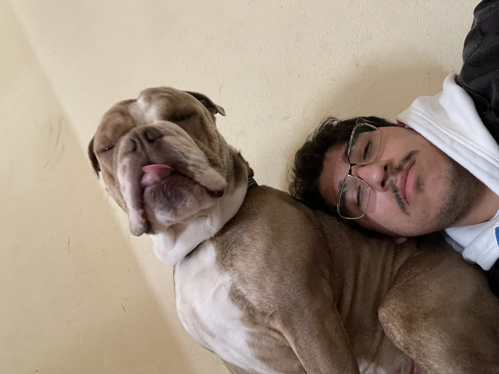
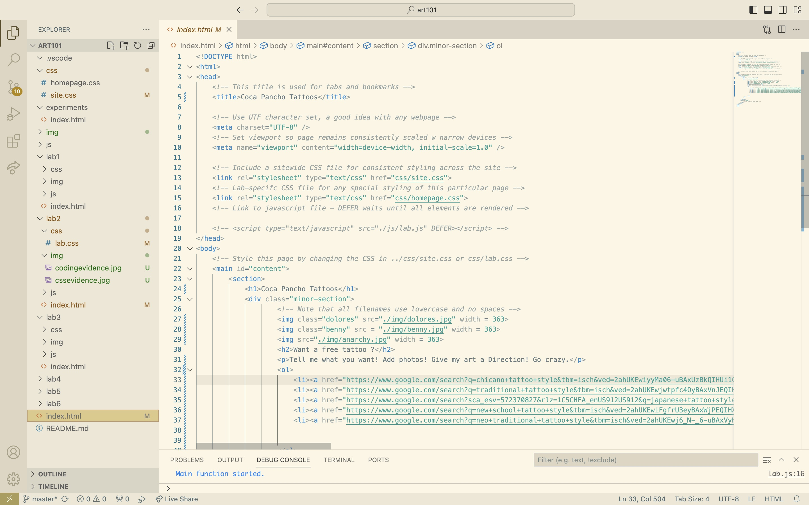
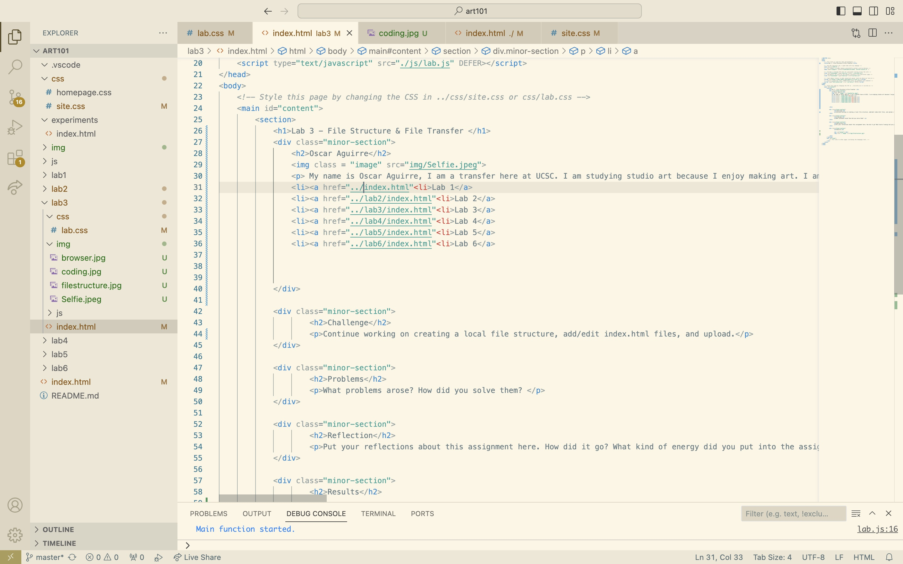
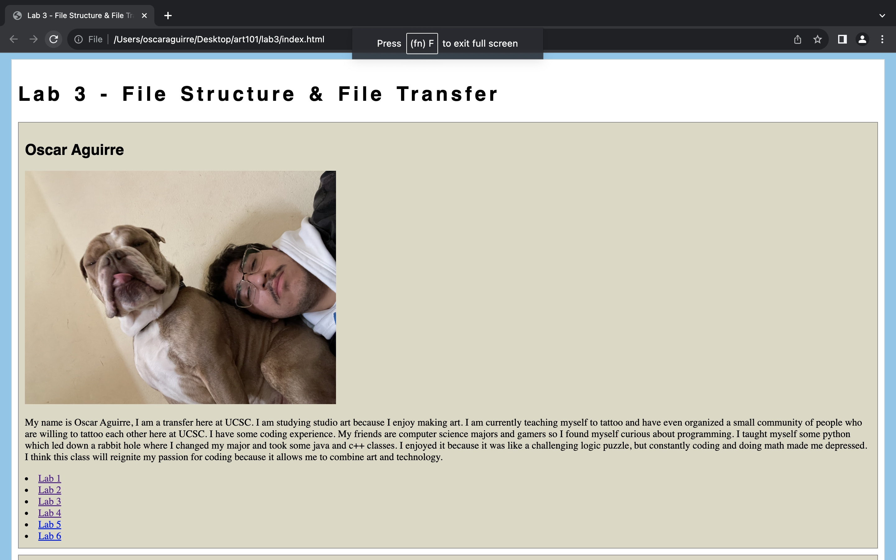

Lab 3 - File Structure & File Transfer
Oscar Aguirre
My name is Oscar Aguirre, I am a transfer here at UCSC. I am studying studio art because I enjoy making art. I am currently teaching myself to tattoo and have even organized a small community of people who are willing to tattoo each other here at UCSC. I have some coding experience. My friends are computer science majors and gamers so I found myself curious about programming. I taught myself some python which led down a rabbit hole where I changed my major and took some java and c++ classes. I enjoyed it because it was like a challenging logic puzzle, but constantly coding and doing math made me depressed. I think this class will reignite my passion for coding because it allows me to combine art and technology.
Challenge
Continue working on creating a local file structure, add/edit index.html files, and upload.
Problems
What problems arose? How did you solve them?
Reflection
Put your reflections about this assignment here. How did it go? What kind of energy did you put into the assignment?
Results

